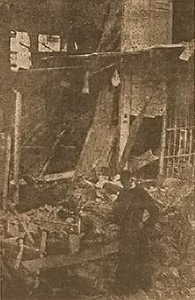

|
j
a v a s c r i p t |
Pg.1/2
November 15, 1944
Commonwealth Day — Osmeña proclaimed it a holiday, but most had to work trying to buy food.

Archbishop O'Doherty inspecting
Archbishop Palace, Intramuros Tribune: "Special Attack Unit Pounds Task Force East of Philippines" — one battleship was "blitz-sunk" by the Fugaku kamikaze unit. The next article is about the direct hits on the Archbishop's Palace in Intramuros [by the Port Area], on the yard of the Apostolic Delegate [Ermita], and a resident neighbor. The religious angle makes for good propaganda and the Japanese exploit it to the fullest. "Thirty more planes bagged over city" — including 14 by antiaircraft, 6 probables, 6 damaged and 4 shot down by Japanese fighters, out of 400 flights over Manila and Cavite. Two days ago they claimed 35 planes, including 10 probables. Radio Tokyo: "Damage to shipping was negligible while damage to ground installations ... slight." "Compulsory Labor Service for All Able-Bodied Citizens" — Laurel's Executive Order No.100, "prescribing compulsory labor service for the construction or repair of roads, bridges and other public works, including AIRFIELDS ... and other MILITARY establishments." "Javanese Eager for Conscription.... The enemy will need more than 2,000 divisions to re-conquer Java if the 50,000,000 population of the island will kill one enemy soldier each." On the raids: The Guerreros, a big family with four doctors, had already lost four members to Japanese bombs on December 1941. All had evacuated from their houses in Ermita, but a helper kept going in and out of one blazing shell of a home to rescue belongings. Dr. Luis Guerrero Jr. decided to go along on the third trip; the house collapsed on him. The family of the drugstore owner had evacuated, leaving the contents of the store behind as it was too difficult to move. The store is gone now, as reported in La Vanguardia, but the number of bombs dropped there thoroughly burned to a crisp some ten Japanese trucks parked under nearby trees. An eyewitness at the Elena Apartments said the plane was hit and the pilot released his bombs just before crashing. |
|
|
|
|